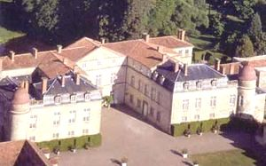
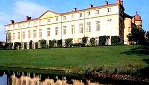
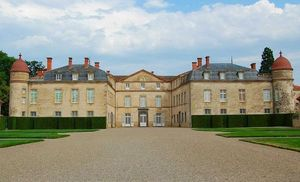
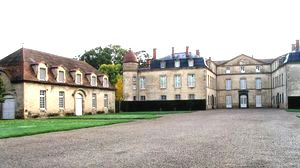
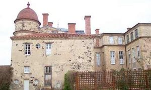
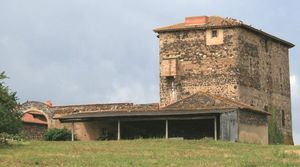
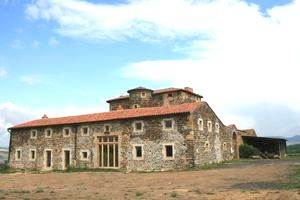
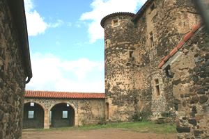
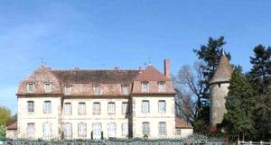

Recensement Jean-Claude Truffet
| Département | 63 — Puy-de-Dôme |
| Canton | Issoire |
| Commune | Parentignat |
| Type d'édifice | Château |
| Période d'origine | XVIII |









Plusieurs châteaux à PARENTIGNAT , déjà cité au XVIIIe siècle, par la famille de Sommyière. Maximilien de Sommyière, ses descendantes (quatre nièces) ne s'entendant pas, la maison reconstruite en 1682, suite à un incendie, achetée par Jean Antoine de Lastic, vicomte de Murat, prieur de Bredon en 1707 pour son neveu François II de Lastic marquis de Sieujac et sa nièce Marie de la Roche Aymont. François de Lastic épousa Claude de St-Genis, et ils adoptèrent Georges de Lastic. En 1779 le comte de Lastic, lieutenant général époux de Melle de Ménars petite nièce de Colbert finit les remaniements jusqu'en 1782. est resté dans la descendance, Vers 1960, pour leur succéder à la tête de Parentignat. Georges de Lastic épousa Françoise Gouin. Leur fils, Anne-François de Lastic, est depuis le décès de Georges de Lastic en janvier 1988, le propriétaire actuel de Parentignat avec sa mère. A deux kilomètres à l'Est à Varennes-sur-Usson le château de MAZEL. En 1478, Chatard du Mazel, écuyer, est seigneur. En 1524, à Vidal du Mazel seigneur. En 1557, Antoine de Fredeville, prieur de Moissat et chanoine, Comte de Bnoude, fait donation de sa maison du Mazel près Usson. Acquise par lui du seigneur de Pierrefitte en Limousin. Avant 1569, le fief est acheté par Antoine Vigier de la Valette qui décède peu après. Avant 1628, à la mort de Christophe , il passe à Marguerite sa nièce, mariée à Jean des Maignoux. En 1628, leur fille Anne l'apporte par mariage à Jean de Valadoux. En 1689. Pierre Hector de Damas, écuyer, est seigneur de Treydieux et du Mazel, il habite à Brioude. FOUILHOUSE Vers 1320, appartient à Guillaume de Riom. Vers 1440, à Aubert de Péchaud, qui a épousé Gaillarde de Riom. Son neveu Antoine de Sailhens hérite avant 1450. Françoise de Sailhens se marie avec Pierre de Malras, issu dune famille protestante anoblie par Henri IV. En 1675 un François de Malras est seigneur de Fouilhouse, bien quil ny habite pas. François de Lastic, seigneur de Parentignat, son beau-frère, lui achète le château en 1719, ce dernier est désormais une dépendance de Parentignat.
Parentignat C'était une maison forte simple quadrilatère flanqué aux angles de quatre tours. richement meublées de la province, En quelques années, cette bâtisse fit place à un insolite château, au plan inspiré de Versailles où l'arkose blonde de Montpeyroux contraste avec les entourages de porte en pierre de Volvic et les toitures de petites tuiles rouges. En 1779, des travaux eurent lieu pour terminer la façade donnant sur le parc et remanier la disposition intérieure, totalement épargné par la Révolution, on y trouve encore une grande partie de son mobilier d'origine. Mazel, enceinte quadrangulaire à flanquements circulaires d'angle, il en reste un isolé et un autre à l'angle d'un logis de deux niveaux et un demi niveau de baies-créneaux. Des canonnières participent à la défense et les modénatures des baies conservées datent du XVIe siècle. Mais à l'intérieur, l'une des cheminées parait nettement plus ancienne. Fouilhouse Maison-forte du XIVe siècle. Grand donjon rectangulaire de trois niveaux, aux angles arrondis. Tour semi-circulaire descalier sur un des grands côtés, un petit côté conserve des latrines.
Famille de Sommyière
"
Château de Parentignat de la Fouilhouse et du Mazel.